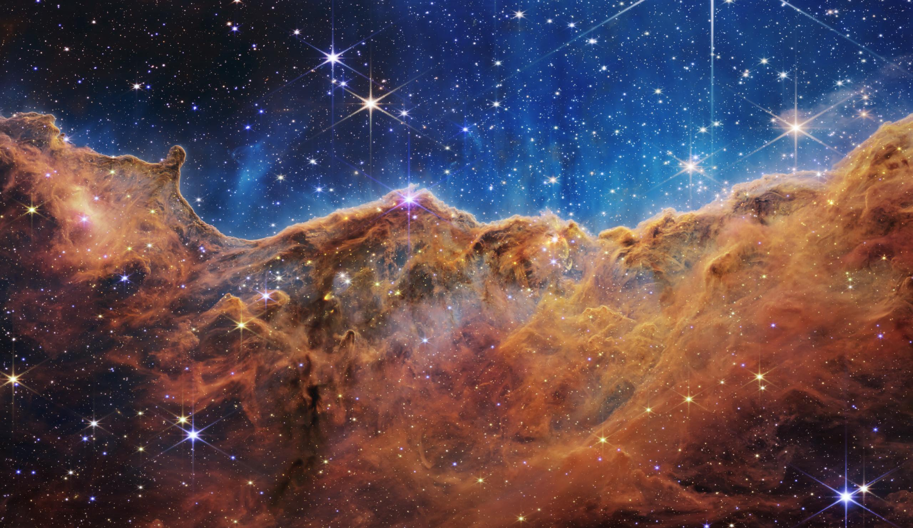
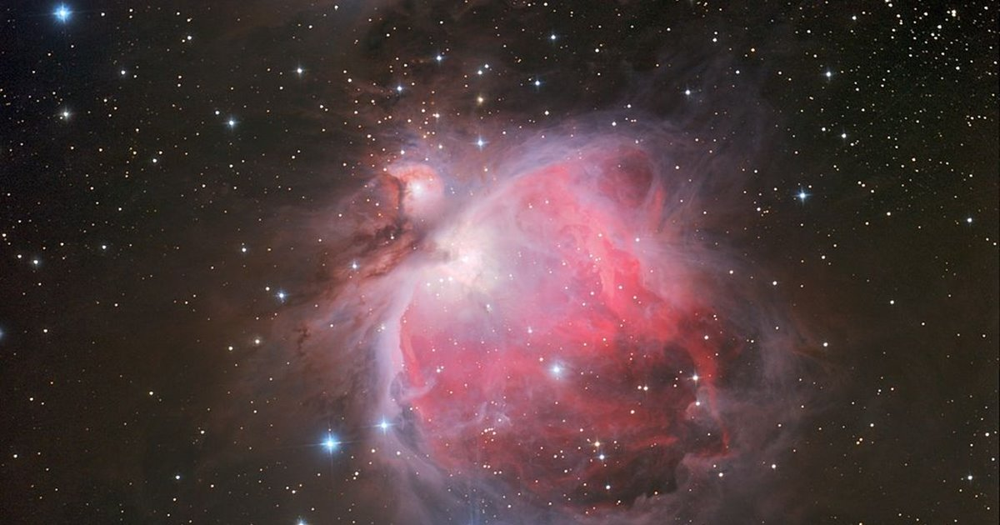
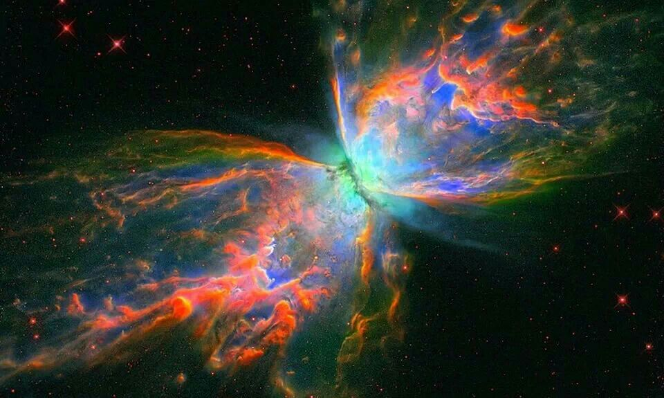
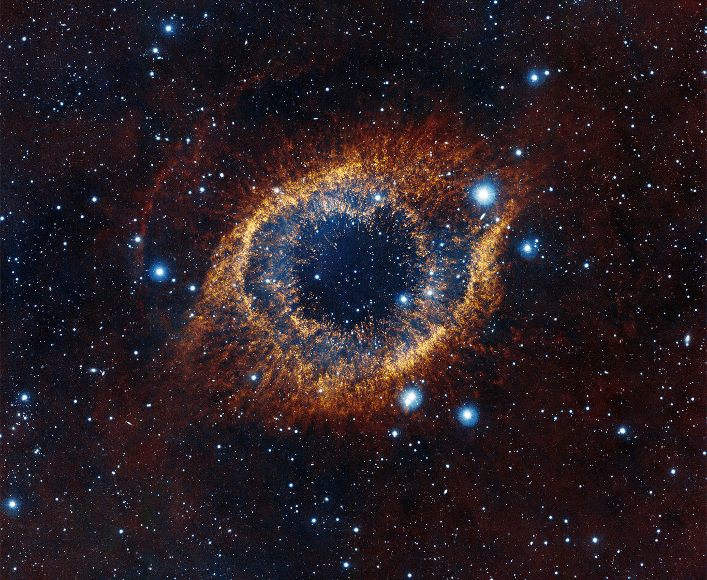
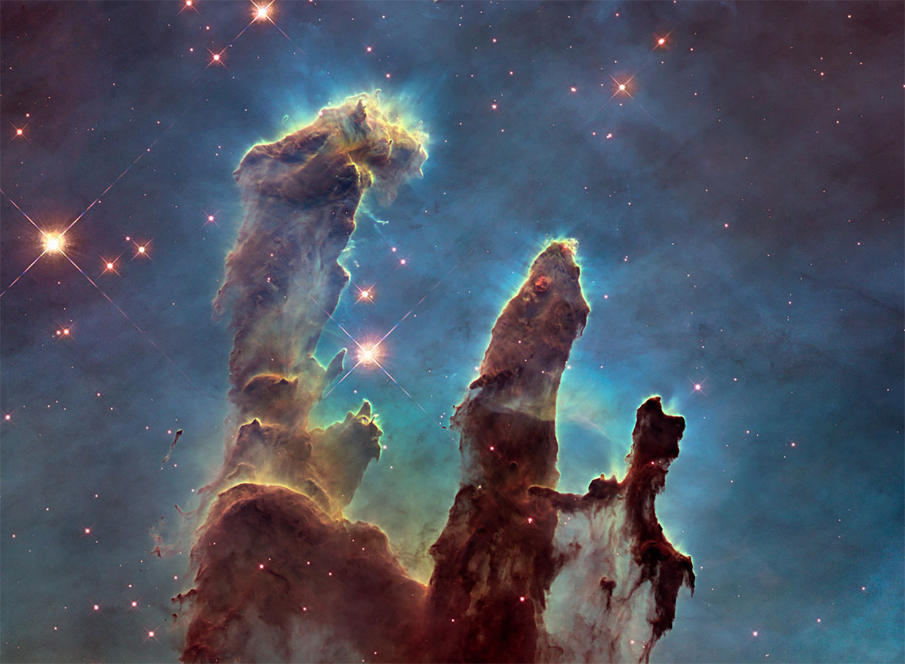

NEBULOSAS
| NEBULOSA CARINA |
 |
La nebulosa de la Quilla, también llamada nebulosa de Carina, nebulosa de Eta Carinae o NGC 3372, es una gran nebulosa de emisión que rodea varios cúmulos abiertos de estrellas. Entre estas estrellas se encuentran Eta Carinae y HD 93129A, dos de las estrellas más masivas y más luminosas en la Vía Láctea. |
| NEBULOSA ORION |
 |
La nebulosa de Orión, también conocida como Messier 42, M42, o NGC 1976, es una nebulosa difusa situada al sur del cinturón de Orión. Es una de las nebulosas más brillantes que existen y puede ser observada a simple vista sobre el cielo nocturno. |
| NEBULOSA MARIPOSA |
 |
NGC 6302 es una nebulosa planetaria bipolar en la constelación de Scorpius, el escorpión, también conocida como nebulosa del Insecto o nebulosa de la Mariposa. Al estar incluida en el Nuevo Catálogo General, este objeto es conocido al menos desde 1888. |
| NEBULOSA DE LA HELICE U OJO DE DIOS |
 |
La nebulosa de la Hélice, nebulosa Helix, NGC 7293 o nebulosa del ojo de Dios es una nebulosa planetaria en la constelación de Acuario, a unos 680 años luz de distancia. Es una de las nebulosas planetarias más próximas a la Tierra y fue descubierta por Karl Ludwig Harding antes de 1824. |
| NEBULOSA PILARES DE LA CREACION |
 |
Los Pilares de la Creación es una fotografía tomada por el telescopio espacial Hubble de trompas de elefante de gas interestelar y polvo en la nebulosa del Águila, a aproximadamente 7000 años luz de la Tierra. |